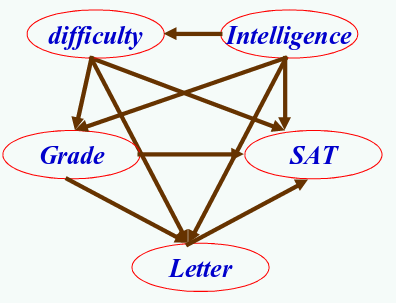

贝叶斯公式与机器学习
Table of Contents
贝叶斯公式
贝叶斯公式

\[ P(A_k|A)=\frac{P(A_k)\times P(A|A_k)}{\sum^n_{j=1}P(A_j)P(A|A_j)} \]
逆概问题
- 正概: 假设袋子里有 N 个白球，M 个黑球， 摸出一个是黑球的概率
- 摸出一个或多个球，推测黑白球比例
在日常生活中，我们也常使用贝叶斯方法进行决策。比如在一个陌生的地方找餐馆吃饭,
我们会根据贝叶斯方法，利用以往积累的经验来提供判断的线索。经验告诉我们，通常那
些坐满了客人的餐馆的食物要更美味些，而那些客人寥寥的餐馆，食物可能不怎么样而且
可能会被宰。所以说，在我们认识事物不全面的情况下，贝叶斯方法是一种很好的利用经
验帮助作出更合理判断的方法。
- 正概: 假设袋子里有 N 个白球，M 个黑球， 摸出一个是黑球的概率
一个例子
- 某种疾病的发病率是 0.001
- 一种检验试剂，它的准确率是 0.99，误报率是 5%
- 现有一病人检验结果为阳性，他确实得病的可能性有多大？
- A={得病}, B={阳性}
\(P(A|B)=\frac{P(A) \times P(B|A)}{P(B|A)\times P(A) + P(B|\bar{A})\times P(\bar{A})}= \frac{0.001\times 0.99}{0.001\times 0.99 + 0.05 \times 0.999}=0.019\)
| 阳性 | 阴性 | |
| 得病 | 0.019 | 0.00001 |
| 没病 | 0.980 | 0.99999 |
- "假阳性"的原因?: 误报率太高
- 算一下"假阴性"问题，思考"假阳性"和"假阴性"哪一个才是医学检验的主要风险？
即 1000 人中会有 1 个人得病。
即在患者确实得病的情况下，它有 99%的可能呈现阳性。
即在患者没有得病的情况下，它有 5%的可能呈现阳性。
"假阴性"即检验结果为阴性，但是病人确实得病的概率有多大。
贝叶斯推理
沉寂 的 200 年
- 经典统计学：反复观察可重复现象，推断规律。
- 贝叶斯方法：在主观判断基础上根据客观事实不断修正。

认为科学是关于客观事实的研究，反复观察可重复现象，积累足够多数据，就能推断规律。
20 世纪的快速发展
- 联邦党人文集作者公案
- 天蝎号核潜艇搜救

- 20 英里海域的概率图
- \(p\) 和 \(q\), \(p\) 潜艇在此格子概率，\(q\) 潜艇在此格子且被搜索到的概率。
选概率值最高的格子搜索，未发现则概率分布图会被“洗牌”一次
1968 年 5 月，美国海军的天蝎号核潜艇在大西洋亚速海海域突然失踪，潜艇和艇上的 99
名海军官兵全部杳无音信。按照事后调查报告的说法，罪魁祸首是这艘潜艇上的一枚奇
怪的鱼雷，发射出去后竟然敌我不分，扭头射向自己，让潜艇中弹爆炸。
John Craven 的数学家，他的头衔是“美国海军特别计划部首席科学家”。召集了数学家、
潜艇专家、海事搜救等各个领域的专家。并不是按照惯常的思路要求团队成员互相协商寻求
一个共识，而是让各位专家编写了各种可能的“剧本”，让他们按照自己的知识和经验对于
情况会向哪一个方向发展进行猜测，并评估每种情境出现的可能性。据说，为了给枯燥的工
作增加一些趣味，Craven 还准备了威士忌酒作为“投注”正确的奖品。
失事时潜艇航行的速度快慢、行驶方向、爆炸冲击力的大小、爆炸时潜艇方向舵的指向都是
未知量，即使知道潜艇在哪里爆炸，也很难确定潜艇残骸最后被海水冲到哪里。半径 20 英里
的圆圈内的数千英尺深的海底，都是天蝎号核潜艇可能沉睡的地方，要在这么大的范围，这
么深的海底找到潜艇几乎成了不可能完成的任务。
大量应用
- 海岸警卫队寻找海上幸存者
- 基金经理用贝叶斯公式找到投资策略
- 生物学家用贝叶斯公式研究基因的致病机制
- 互联网公司用贝叶斯公式改进搜索功能，帮助用户过滤垃圾邮件
- 二战中 图灵 破解 德国海军密码
- 看一眼就可模仿写字的机器

机器学习中的贝叶斯方法
- 贝叶斯方法席卷了概率论，并将应用延伸到各个问题领域，所有需要作出概率预测的地方都可以见到贝叶斯方法的影子
- 特别地，贝叶斯是机器学习的核心方法之一。
都大数据时代了，还存在数据稀疏性问题吗？答案是肯定的。具体来说，一个取决于 n 个参
数，并且每个参数只有两种表现（0 或者 1）的系统，共有 2 的 n 次方种现象。如果某类癌症的
产生过程中有 100 个基因参与（这其实很保守了，人类总共有几万个基因），那么它有 2 的
100 次方种可能的基因图谱；根据采样定理进行估算，采用经典统计学方法至少需要获得
1%-10%的样本才能确定其病因，也就是需要制作出数万亿亿亿个患有该疾病的病人的基因图
谱！这不具备可操作性。
重新理解贝叶斯公式
\(P(h | D) = \frac{P(h) \times P(D | h) }{ P(D)}\)
\(P(h | D) \propto P(h) * P(D | h)\)
- P(h | D)："后验概率"（Posterior probability）
- P(h)：不同猜测的可能性大小, "先验概率"（Prior probability）。
- P(D|h)/P(D)：算出最靠谱的猜测，最大似然（Likelyhood）。
贝叶斯公式的信息论解释
两边求对数: \(\ln P(h | D) \propto \ln P(h) + \ln P(D | h)\)
ln P(h) + ln P(D | h) : 模型 h 的编码长度 + 在该模型下数据 D 的编码长度
模型（或者称“假设”、“猜测”）h
机器学习中的贝叶斯方法
\(P(h | D) = \frac{P(h) \times P(D | h) }{ P(D)}\)
\(P(h | D) \propto P(h) * P(D | h)\)
- 拼写纠正: 选择离 thew 的编辑距离最近的。
然而 the 和 thaw 离 thew 的编辑距离都是 1。 - 二义性消解: The girl saw the boy with a telescope.


注意到字母 e 和字母 w 在键盘上离得很紧，无名指一抽筋就不小心多打出一个 w 来，the 就变成 thew 了。而另一方面 thaw 被错打成 thew 的可能性就相对小一点
EM (Expectation-Maximazatio) 聚类方法

- 问题描述：给你一堆数据点，让你将它们最靠谱地分成一堆一堆的。
- 分别是围绕 K 个核心的 K 个正态分布源所随机生成。
- 先随机取正态分布参数，计算出每个数据点归属，Expectation。
- 有了每个数据点的归属，重新评估分布参数，Maximazation。
朴素贝叶斯分类及垃圾邮件过滤
- 问题描述：给定一封邮件，判定它是否属于垃圾邮件。
- 我们还是用 D 来表示这封邮件，注意 D 由 N 个单词组成。
- 用 h+ 来表示垃圾邮件，h- 表示正常邮件。
P(h+|D) = P(h+) * P(D|h+) / P(D)
P(h-|D) = P(h-) * P(D|h-) / P(D)
- P(D|h+) = P(d1,d2,..,dn|h+)
- P(d1,d2,..,dn|h+) 扩展为：P(d1|h+) * P(d2|d1, h+) * P(d3|d2,d1, h+) * ..
- 条件独立假设: 简化为 P(d1|h+) * P(d2|h+) * P(d3|h+) * ..
2003 年 5 月 BBC 专题报道称,贝叶斯可以达到 99.7%的垃圾邮件识别率,同时误判率极低。
贝叶斯过滤器很难被欺骗。用 5ex 代替 sex, 减少垃圾词汇(如 free、viagra、发票)或者
在信中多掺一些好的词汇(如合同、文件)
概率图模型: 贝叶斯网络
- 龙卷风的形成、星系的起源、致病基因、大脑的运作机制等
- 要揭示隐藏在这些问题背后的规律
- 就必须理解它们的成因网络，把错综复杂的事件梳理清楚。
- 贝叶斯网络，它是贝叶斯公式和图论结合的产物。
- 它给复杂问题提供了一个普适性的解决框架。
贝叶斯网络
- 把每个可能的原因作为网络中的节点连接起来，根据已有的知识、我们的预判或者专家意见给每个连接分配一个概率值。
- 接下来只需要向这个模型代入观测数据，通过网络节点间的贝叶斯公式重新计算出概率值。

贝叶斯公式的价值在于，当观测数据不充分时，它可以将专家意见和原始数据进行综合，以
弥补测量中的不足。我们的认知缺陷越大，贝叶斯公式的价值就越大。
问题

线性回归: 最小二乘方法
- 寻找直线使得 (ΔY1)^2 + (ΔY2)^2 + .. （即误差的平方和）最小
- 从贝叶斯的角度分析该评判标准
谢谢！